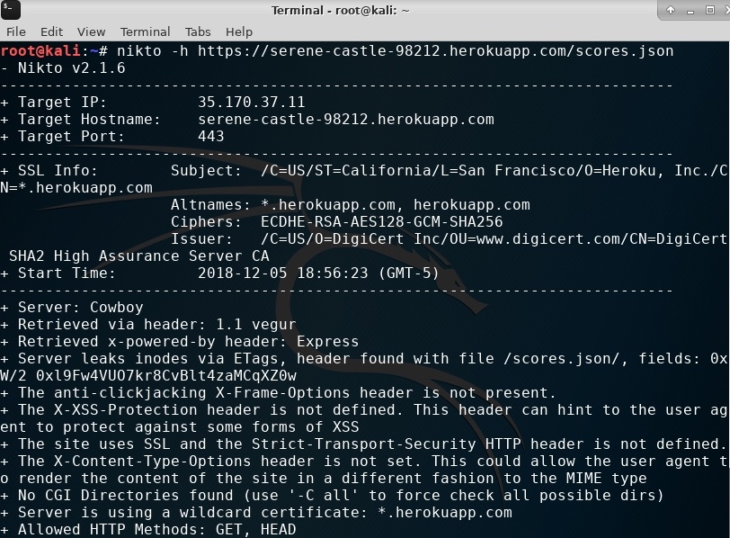
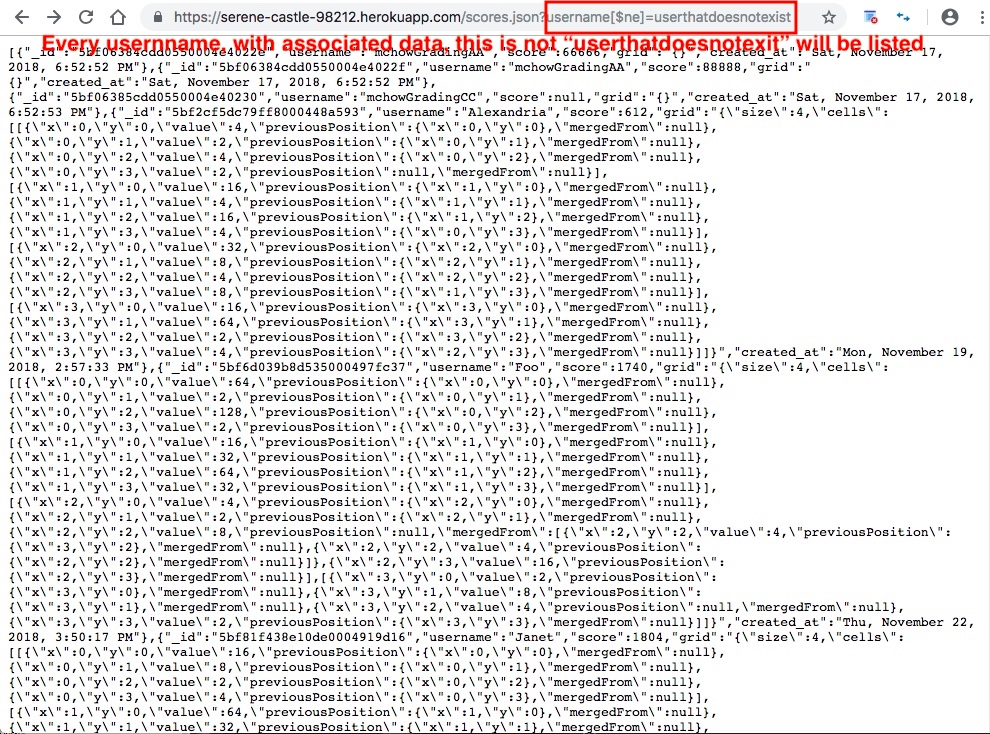

Product: https://serene-castle-98212.herokuapp.com/home.html
The product is a web server that utilizes a Node.js and mongodb database driver app. This app takes the following data from 2048 game and stores them in a MongoDB database server via a POST route: username, score, grid, and time/date created. The afformentioned data from each game session is saved as one document in the database collection. This app also retrieves and displays the afformentioned data via two GET routes: one for all documents from all usernames in the collection and one for all documents for a specified username in the collection.
The purpose of this effort is to perform a security assessment on this web application that is currently overun with security and privacy vulnerabilities and to document and resolve these issues. The methodologies and findings are detailed below.
An analyis of all routes was performed. The following routes and their respective URLs were identified:
| Route | HTTP Verb | Link |
|---|---|---|
| / | GET | https://serene-castle-98212.herokuapp.com/ |
| /submit | POST | https://serene-castle-98212.herokuapp.com/submit |
| /scores.json | GET | https://serene-castle-98212.herokuapp.com/scores.json |
The following tools were then deployed to scan the web app and gather information regarding the app's vulnerabilities related to security and privacy:
It was discovered that the product contains multiple security and privacy vulnerabilites. The web app was found to contain a few of the top vulnerabilities as detailed in the OWASP Top 10 Application Security Risk
This example of XSS was created when the script "< script>alert("hello")< /script>" was entered alongside the username data type and submitted via the POST / route. This was achieved by using the terminal to enter the following command: curl --data "username=hacked< script>alert("hello")< /script>&score=1000000&grid={a:b}" https://serene-castle-98212.herokuapp.com/submit
The severity level of this issue is MEDIUM because an unaware user can be redirected to a more malicious website, the attack can cause popups and drastically deteriorate user experience, and unwanted content could be injected to a website.
This issue can be resolved by restricting the se of special characters upon user input (ie. never, ever trust user input!). A simple one line code to prevent XSS can be as follows: usernameItem = usernameItem.replace(/[^\w\s]/gi, '');
See below for the Nikto report detailing additional XSS vulnerability information for this app:
The severity level of this issue is HIGH because multiple users can fall victim to this type of attack. Their private and personal information could be extracted and used maliciously.
This issue can be resolved by restricting conditional operators.
See below for the straight injection performed on the website to retrieve all user data:
In conclusion, the vulnerabilites listed are simple fixes given time and effort to place these mitigations. Many top vulnerabilites, in particular those listed within OWASP Top 10, can be mitigated with careful user input restrictions. Remember: never, ever trust user input!